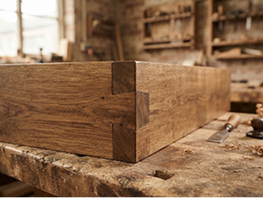
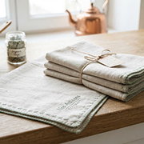
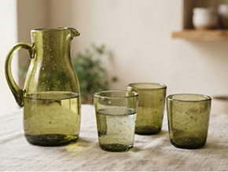
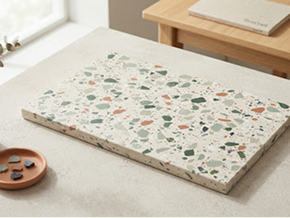
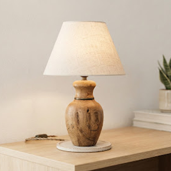
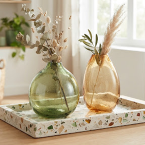
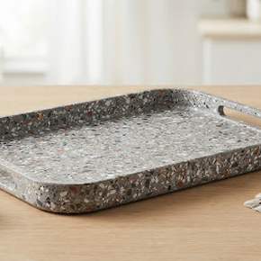
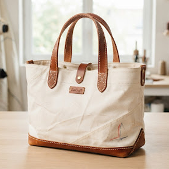
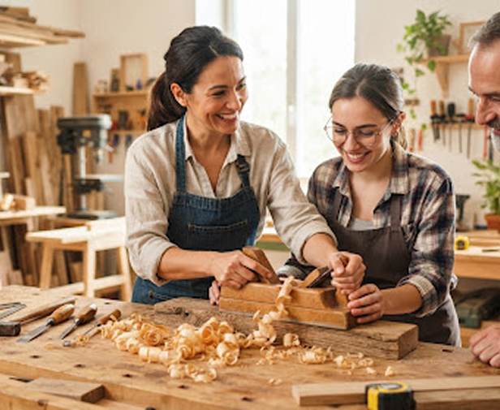
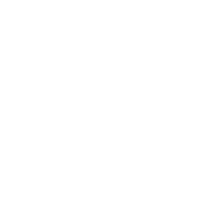

Pièce signature du mois
EcoArt relie le design contemporain à l'économie régénérative. Nous transformons les rebuts nobles — chutes de chêne séculaire, textiles dormants et verre soufflé — en objets d'exception conçus par 42 maîtres artisans.
Pièce signature du mois
14,2 t
Détournés des filières de destruction et d'enfouissement
42
Ébénistes, verriers, céramistes et maroquiniers labellisés
100%
Chaque texture témoigne de l'histoire vivante de la matière
Sourcing vertueux
Chaque gisement est sauvé de l'oubli grâce à des protocoles de tri drastiques et la complicité d'usines locales responsables.
Chênes séculaires issus de déconstructions de granges normandes, chutes massives d'ateliers et palettes traitées sans chimie.

Fins de rouleaux haute couture, toiles de chanvre vintage et lins lavés non utilisés collectés auprès de filatures des Hauts-de-France.

Bouteilles de domaines viticoles et chutes de miroiterie fondues au four solaire pour créer des textures organiques bulleuses.

Bouchons PEHD et bouteilles collectés en circuits scolaires puis thermocompressés pour façonner des plateaux ultra-résistants et marbrés.

Créations révélées

Bois & Lin-4,2 kg CO₂Atelier Lumina • Rennes
Socle façonné dans une poutre de grange bretonne de 1890 et câble textile.

Verre Cullet-6,8 kg CO₂Verrerie d'Éden • Blot
Bouteilles champenoises fondues au four électrique alimenté par…

Plastique PEHD-3,1 kg CO₂Atelier Re-Form • Lyon
Élaboré à partir de 240 bouchons collectés par une association sportive…

Voile & Cuir-5,5 kg CO₂Vollerie Sauvée • Lorient
Spinnaker de régate réformé assemblé à des chutes de sellerie équestre…
Nous redéfinissons le luxe contemporain : la valeur d'un objet ne réside pas dans l'extraction de nouvelles ressources mais dans la dignité de sa transformation.
100% de nos matières sont sourcées à moins de 250 km des ateliers. Un passeport numérique infalsifiable retrace le bâtiment d'origine de votre meuble ou l'histoire du tissu surcyclé.
Sublimer la patine du temps exige une virtuosité technique supérieure au neuf. Nos artisans conjuguent gestes ancestraux des Compagnons et technologies de découpe douce.
Dans nos ateliers partenaires, rien ne se perd : les sciures réchauffent les séchoirs, les micro-chutes de cuir deviennent poignées et les emballages sont tous réutilisables en boucle consigne.

Atelier coup de cœur • Samedi prochainRejoignez Claire, artisane-designer, pour transformer vous-même 500g de chutes plastiques et liège naturel en un superbe centre de table aux finitions marbrées. Repartez le jour même avec votre création polie et étiquetée.
Ce que comprend la session :
« J'ai commandé la table basse en chêne de charpente. Le QR code m'a appris qu'elle venait d'une halle marchande du XIXe siècle à 30 km de chez moi. C'est du véritable luxe porteur de sens. »
« L'atelier de soufflage de verre recyclé était magique. On comprend la valeur du geste et on ne regarde plus jamais une bouteille de la même manière. Expérience humaine inoubliable ! »
« En tant qu'artisan maroquinier, EcoArt m'a permis d'écouler toutes mes chutes de sellerie noble auprès d'un public qui apprécie l'authenticité plutôt que la production de masse. »
Mouvement circulaire
Rejoignez notre communauté de plus de 3 500 passionnés de design durable. Explorez des créations numérotées ou privatisez un atelier pour vos équipes.
